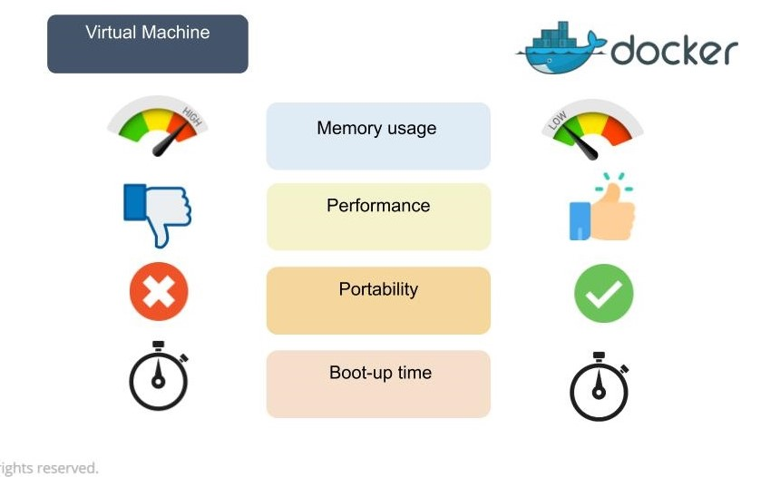
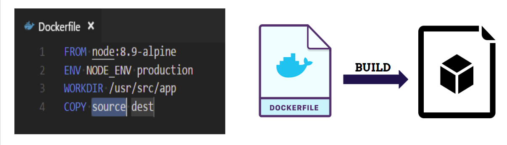
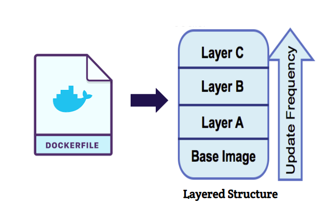
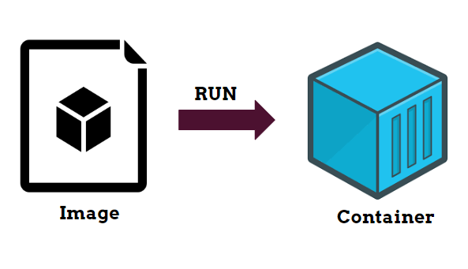
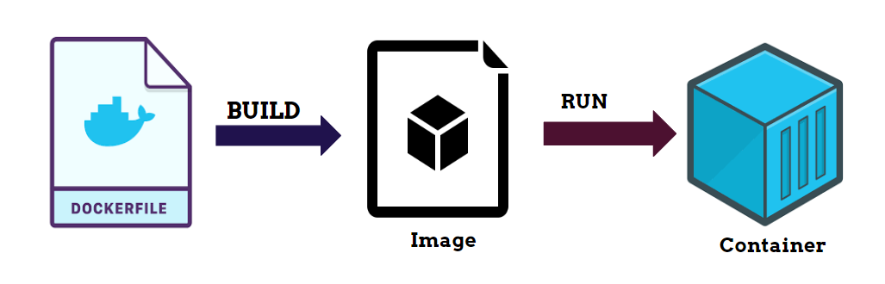

Difference between Docker Vs Virtual machine
- The virtual environment has a hypervisor layer, whereas Docker has a Docker engine layer.
- There are additional layers of libraries within the virtual machine, each of which compounds and creates very significant differences between a Docker environment and a virtual machine environment.
- With a virtual machine, the memory usage is very high, whereas, in a Docker environment, memory usage is very low.
- In terms of performance, when you start building out a virtual machine, particularly when you have more than one virtual machine on a server, the performance becomes poorer. With Docker, the performance is always high because of the single Docker engine.
- The boot-up time for a virtual machine is fairly slow in comparison to the boot-up time for a Docker environment, in which boot-up is almost instantaneous.
- One of the other challenges of using a virtual machine is that if you have unused memory within the environment, you cannot reallocate it. If you set up an environment that has 9 gigabytes of memory, and 6 of those gigabytes are free, you cannot do anything with that unused memory. With Docker, if you have free memory, you can reallocate and reuse it across other containers used within the Docker environment.
What is Docker
Docker is an OS virtualized software platform that allows IT organizations to easily create, deploy, and run applications in Docker containers, which have all the dependencies within them. The container itself is really just a very lightweight package that has all the instructions and dependencies—such as frameworks, libraries, and bins—within it.The container itself can be moved from environment to environment very easily.
In a DevOps lifecycle , the area where Docker really shines is deployment, because when you deploy your solution, you want to be able to guarantee that the code that has been tested will actually work in the production environment.You can use Docker in multiple stages of your DevOps cycle, but it is especially valuable in the deployment stage.
How Doker works
Docker works via a Docker engine that is composed of two key elements: a server and a client; and the communication between the two is via REST API. The server communicates the instructions to the client.
Docker terminologies
Dockerfile :
A Dockerfile is a text document that contains all the commands a user could call on the command line to assemble an image. Docker builds the images automatically by reading the instructions from Dockerfile.
Docker Image :
Image is read-only template for which is used for creation of container . Each instruction in docker file create layer in image. Images are created with the build command, and they'll produce a container when started with the run command. Images are stored in a Docker registry such as hub.docker.com.
Docker Container :
Docker uses a client-server architecture. The Docker client talks to the Docker daemon, which does the heavy lifting of building, running, and distributing your Docker containers.The Docker client and docker daemon communicate with REST API The Docker client and daemon can run on the same system, or you can connect a Docker client to a remote Docker daemon.
Flow For Building Of Container
For More info refer docker
GO UP